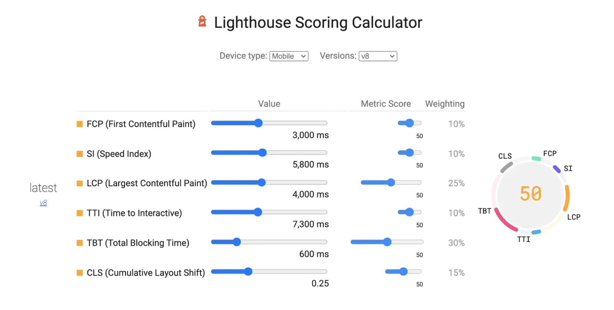

短答
布局偏移工具列出的是事件和构成。它不会交给你一个名次。
计算器和实验室审计是用来探索定义的界面。计算器的截图不是现场数据，也不是本页指派给任何人的分数。SEO 健康可以说实验室审计在样例 URL 上归咎于哪个元素。它不能把计算器贴进报告，把图片叫作测量。
定义
实验室输出和现场描述回答不同的问题。实验室运行是一次脚本化加载。现场数据在团队真正拥有时，汇总的是真实访问。本文没有任何具名公司的这两种数据，因此不会编造。有用的习惯是在争论修复之前，先标明观察的来源。
健康检查里怎么使用这个定义
每条布局记录都要标明是实验室、现场，还是仅有定义，绝不要把计算器截图当成网站结果。
当实验室审计指向一张没有尺寸的图片，修复就是该模板上的图片占位。当唯一的材料是一张分数界面的图片，在有人复现页面之前，没有元素可修。SEO 健康停留在可复现的观察和样例 URL 上。关于缺主题的增长讨论可以再等。

要检查什么
- 记录是否写明实验室、现场或仅为示意
- 如果真的跑过审计，它点名的元素
- 没有把裁切的计算器当作公司结果
- 模板真的被加载时的一条样例 URL
- 与 SEO 增长的主题缺口分开
一个结构示例
一套幻灯片裁了一张计算器，让一个数字看起来像“我们的 CLS”。这个数字从未在该公司的模板上测量过。诚实的替换是一条实验室记录：分类主视觉没有宽高，附上样例 URL，没有总等级。Mika 不希望审计里出现那张裁切图。
它不声称什么
工具截图不保证排名或引用，本页也不保证布局结果。
Mika Visibility 把它归到哪里
Mika Visibility 把它归在 SEO 健康：线上站点在技术上是否准备好被发现和理解。SEO 增长仍是关于覆盖和意图的另一个问题。GEO 健康与 GEO 增长保持各自的尺度。一条加载或响应性记录不会自动变成增长分数，也没有混合总分。
图中是计算器界面，让读者看见工具和测量的差别。
常见问题
布局偏移工具报告什么？
布局偏移工具列出的是事件和构成。它不会交给你一个名次。
记录应该如何标注？
每条布局记录都要标明是实验室、现场，还是仅有定义，绝不要把计算器截图当成网站结果。
工具截图能保证排名吗？
工具截图不保证排名或引用，本页也不保证布局结果。
下一步
做一次结构化的 SEO + GEO 审计，查看健康发现、增长缺口和可以执行的蓝图。
更清晰的实体、答案、证据和上下文，会让页面更容易被理解与引用。任何回答产品中的结果都不作保证。